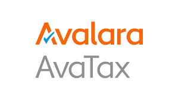
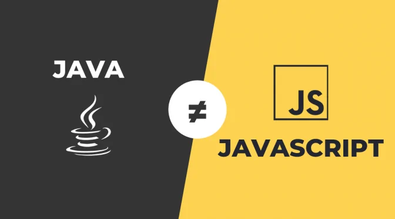
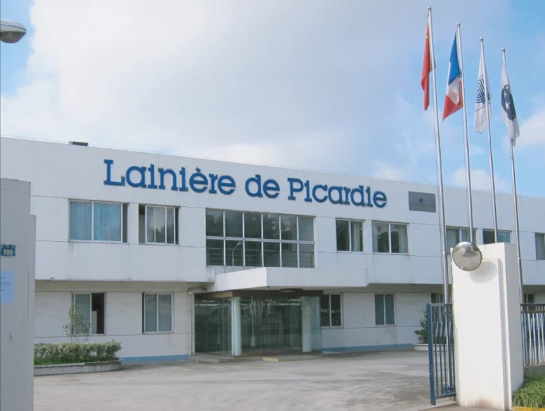
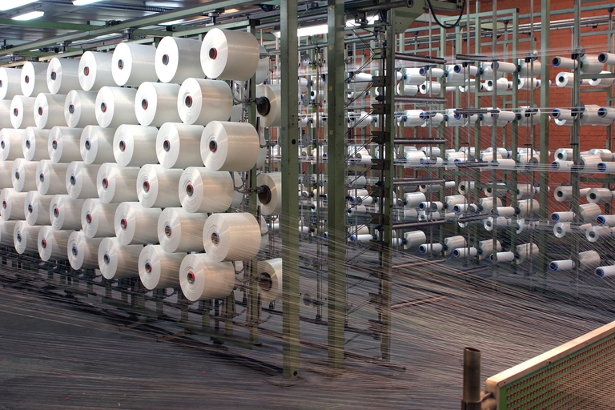

Découvrez mon expérience de stage chez Lainière de Picardie où j'ai pu observer le travail d'équipe, participer à des projets concrets et développer mes compétences professionnelles.
Intégrer l'API Avatax en Java
Les défis relevés et les solutions trouvées pour réussir cette intégration technique d'API.
Migration vers Google Spanner

J'ai participé à la migration de la base de données SQL Anywhere vers Google Cloud Spanner. Ce processus technique m'a confronté à la réécriture des requêtes SQL et la gestion de la sensibilité à la casse.
Approfondissement Java et JavaScript
J'ai approfondi et amélioré mes compétences grâce aux bonnes ressources et à des exercices fournis par mon maître de stage.
Présentation de la salle serveur entreprise

J'ai découvert la salle serveur de l'entreprise avec ses sauvegardes et mesures de sécurité. J'ai également exploré l'infrastructure grâce à une carte, comprenant les baies de serveurs et les choix stratégiques du fournisseur.
Changement d'adresse IP d'un VPN

Cet article explore le processus de changement d'adresse IP d'un VPN entre le siège social en France et une filiale dans un autre pays. Il met en évidence l'importance de cette pratique pour assurer une communication sécurisée et fiable entre les bureaux internationaux de l'entreprise.
Réparation d'imprimante
J'ai pu visiter l'usine, voir la réparation d'une imprimante et l'importance de la polyvalence.
Migration et Configuration d'un switch
La migration d'un switch 24 ports vers un switch 48 ports. Cette expérience m'a permis de développer mes compétences en gestion de réseau et de réaliser l'impact majeur des sauvegardes.
Réparation et Mise à jour des Boitiers INTEOS
Cet article aborde l'importance et la résolution de soucis sur les boitiers INTEOS dans le tricotage industriel.
Bilan du Stage de Fin d'Année
Le bilan de mon stage au sein de la Lainière de Picardie. Mes ressentis, mes axes d'améliorations...
L'Innovation dans le Secteur Textile
Évolution des visiteuses de tissu dans le domaine industriel du tissage.
Rétrospective et Projets Futurs : Mon Parcours

Retour sur mes projets et mes futurs améliorations.